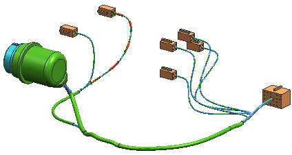

In this activity, you will assign overstock to selected harness segments using the Point to Point and Interval methods.

Launch the Assign overstock at points and intervals activity.
For additional information, see the following:
Use the Command Finder to search for Overstock.